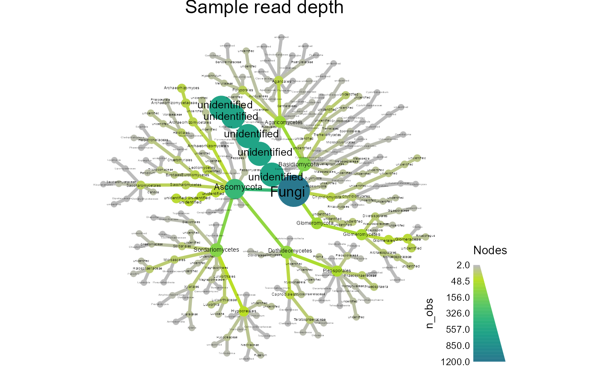

Tutorial.RmdOnce amplicon data is processed, it can be returned as an abundance matrix, data table of OTU taxonomic information, and data table with sample information. The format of these datasets vary depending on the program used to process the amplicon data. The purpose of this package is to turn these separate datasets into one usable taxmap object that can be easily manipulated and analyzed with functions from metacoder, taxa, and phyloseq.
Let’s install and load the package.
devtools::install_github("arielebanks/ebanks.package")
library(ebanks.package)## Warning: replacing previous import 'phyloseq::filter_taxa' by
## 'taxa::filter_taxa' when loading 'ebanks.package'This tutorial will use a sample data table and a fungal OTU abundance matrix. Before you read in the data, make sure tidyverse is loaded.
Now, let’s read in and inspect the sample data table.
spartina_sample <- read_csv("../inst/extdata/spartina_sample.csv")##
## -- Column specification --------------------------------------------------------
## cols(
## .default = col_double(),
## sample_id = col_character(),
## tissue = col_character(),
## site = col_character(),
## treatment = col_character()
## )
## i Use `spec()` for the full column specifications.
print(spartina_sample)## # A tibble: 117 x 3,505
## sample_id tissue site treatment pH mS tds PAH PWR DWR
## <chr> <chr> <chr> <chr> <dbl> <dbl> <dbl> <dbl> <dbl> <dbl>
## 1 S6.BN.L1 Leaf BJ non-oiled 7.11 42.5 3188 8.38 0.7 0.4
## 2 S6.BN.L10 Leaf BJ non-oiled 7.07 49.9 3822 2.40 0.516 0.311
## 3 S6.BN.L2 Leaf BJ non-oiled 7.34 55.5 4291 7.08 0.674 0.444
## 4 S6.BN.L3 Leaf BJ non-oiled 7.42 35.1 2570 0.570 0.712 0.483
## 5 S6.BN.L4 Leaf BJ non-oiled 7.35 51.9 3986 0.580 0.75 0.444
## 6 S6.BN.L5 Leaf BJ non-oiled 7.27 33.9 2506 9.13 0.821 0.5
## 7 S6.BN.L6 Leaf BJ non-oiled 7.05 41.8 3125 5.64 0.783 0.5
## 8 S6.BN.L7 Leaf BJ non-oiled 7.01 46.3 3680 8.24 0.943 0.308
## 9 S6.BN.L8 Leaf BJ non-oiled 7.1 45 3417 7.88 0.674 0.483
## 10 S6.BN.L9 Leaf BJ non-oiled 7.05 31.9 2850 0.55 0.688 0.444
## # ... with 107 more rows, and 3,495 more variables: derep_917 <dbl>,
## # derep_9798 <dbl>, derep_911 <dbl>, derep_9795 <dbl>, derep_10330 <dbl>,
## # derep_6548 <dbl>, derep_919 <dbl>, derep_9792 <dbl>, derep_3759 <dbl>,
## # derep_121805 <dbl>, derep_3200 <dbl>, derep_3750 <dbl>, derep_18103 <dbl>,
## # derep_3754 <dbl>, derep_2332 <dbl>, derep_2336 <dbl>, derep_2335 <dbl>,
## # derep_6147 <dbl>, derep_285 <dbl>, derep_2339 <dbl>, derep_2338 <dbl>,
## # derep_9642 <dbl>, derep_17856 <dbl>, derep_55543 <dbl>, derep_16459 <dbl>,
## # derep_17859 <dbl>, derep_17858 <dbl>, derep_16670 <dbl>, derep_29068 <dbl>,
## # derep_9790 <dbl>, derep_29065 <dbl>, derep_16679 <dbl>, derep_29061 <dbl>,
## # derep_11889 <dbl>, derep_16664 <dbl>, derep_98748 <dbl>, derep_34252 <dbl>,
## # derep_17216 <dbl>, derep_57372 <dbl>, derep_58810 <dbl>, derep_57371 <dbl>,
## # derep_19887 <dbl>, derep_25531 <dbl>, derep_9267 <dbl>, derep_87173 <dbl>,
## # derep_90221 <dbl>, derep_1821 <dbl>, derep_866 <dbl>, derep_6430 <dbl>,
## # derep_6431 <dbl>, derep_6433 <dbl>, derep_3752 <dbl>, derep_5813 <dbl>,
## # derep_20437 <dbl>, derep_24488 <dbl>, derep_25175 <dbl>, derep_25174 <dbl>,
## # derep_43472 <dbl>, derep_25176 <dbl>, derep_34652 <dbl>, derep_34650 <dbl>,
## # derep_34651 <dbl>, derep_24487 <dbl>, derep_7233 <dbl>, derep_18106 <dbl>,
## # derep_7237 <dbl>, derep_6899 <dbl>, derep_19459 <dbl>, derep_16183 <dbl>,
## # derep_76325 <dbl>, derep_7051 <dbl>, derep_25192 <dbl>, derep_59510 <dbl>,
## # derep_7457 <dbl>, derep_68136 <dbl>, derep_29204 <dbl>, derep_29202 <dbl>,
## # derep_118332 <dbl>, derep_28072 <dbl>, derep_33936 <dbl>, derep_7431 <dbl>,
## # derep_7437 <dbl>, derep_7436 <dbl>, derep_7435 <dbl>, derep_1305 <dbl>,
## # derep_1302 <dbl>, derep_1301 <dbl>, derep_13915 <dbl>, derep_145921 <dbl>,
## # derep_96106 <dbl>, derep_68829 <dbl>, derep_40077 <dbl>, derep_68399 <dbl>,
## # derep_40073 <dbl>, derep_60385 <dbl>, derep_40078 <dbl>, derep_8520 <dbl>,
## # derep_5802 <dbl>, derep_8523 <dbl>, derep_8526 <dbl>, ...In this study, leaves, roots, and rhizosphere samples were collected from Spartina alterniflora in oiled and non-oiled sites along the Louisiana Gulf Coast. It displays samples as rows and environmental data and fungal OTUs as columns.
Let’s do the same for the abundance matrix.
spartina_otu <- read_csv("../inst/extdata/spartina_otu.csv")##
## -- Column specification --------------------------------------------------------
## cols(
## .default = col_double(),
## out_id = col_character(),
## taxa_assignment = col_character()
## )
## i Use `spec()` for the full column specifications.
print(spartina_otu)## # A tibble: 3,495 x 119
## out_id taxa_assignment S6.BO.S9 S6.BN.L8 S6.BN.R7 S6.FO.L1 S6.FN.L5 S6.FO.R8
## <chr> <chr> <dbl> <dbl> <dbl> <dbl> <dbl> <dbl>
## 1 derep~ None 4 23 28 8 1 42
## 2 derep~ None 0 0 0 0 0 0
## 3 derep~ KJ484706|k__Fu~ 0 0 0 0 0 0
## 4 derep~ None 0 0 0 0 0 0
## 5 derep~ KJ481209|k__Fu~ 0 0 0 0 0 0
## 6 derep~ None 0 0 0 0 0 0
## 7 derep~ None 1 0 0 0 0 0
## 8 derep~ None 0 0 0 0 0 0
## 9 derep~ KF359557|k__Fu~ 0 0 0 5 0 0
## 10 derep~ None 0 0 0 0 0 0
## # ... with 3,485 more rows, and 111 more variables: S6.FN.L4 <dbl>,
## # S6.BN.S2 <dbl>, S6.FN.L10 <dbl>, S6.BN.R5 <dbl>, S6.BN.R4 <dbl>,
## # S6.FN.R7 <dbl>, S6.BN.R1 <dbl>, S6.BN.L9 <dbl>, S6.BN.R2 <dbl>,
## # S6.FO.L2 <dbl>, S6.BN.R9 <dbl>, S6.FN.S5 <dbl>, S6.FO.L3 <dbl>,
## # S6.BO.R7 <dbl>, S6.BN.R3 <dbl>, S6.BN.L2 <dbl>, S6.BO.R10 <dbl>,
## # S6.FN.S1 <dbl>, S6.BO.S8 <dbl>, S6.BO.R8 <dbl>, S6.BO.S5 <dbl>,
## # S6.BO.S7 <dbl>, S6.BN.S9 <dbl>, S6.BN.S10 <dbl>, S6.BO.S4 <dbl>,
## # S6.BN.S5 <dbl>, S6.BN.S8 <dbl>, S6.FO.S5 <dbl>, S6.FN.S7 <dbl>,
## # S6.BO.S10 <dbl>, S6.FO.S6 <dbl>, S6.FO.S8 <dbl>, S6.FO.S2 <dbl>,
## # S6.BN.S4 <dbl>, S6.BO.S1 <dbl>, S6.BO.S2 <dbl>, S6.BO.S6 <dbl>,
## # S6.FN.L2 <dbl>, S6.BN.L3 <dbl>, S6.FN.L8 <dbl>, S6.BN.L10 <dbl>,
## # S6.BO.L9 <dbl>, S6.FO.L6 <dbl>, S6.FO.R9 <dbl>, S6.FO.R3 <dbl>,
## # S6.FN.R10 <dbl>, S6.BO.R5 <dbl>, S6.BO.L3 <dbl>, S6.FO.S10 <dbl>,
## # S6.FO.R6 <dbl>, S6.FN.S4 <dbl>, S6.FN.S10 <dbl>, S6.FO.S3 <dbl>,
## # S6.BN.L7 <dbl>, S6.BN.S7 <dbl>, S6.BN.S3 <dbl>, S6.FN.S8 <dbl>,
## # S6.FO.S1 <dbl>, S6.BN.R10 <dbl>, S6.FN.R9 <dbl>, S6.BN.R8 <dbl>,
## # S6.FN.S6 <dbl>, S6.FN.S2 <dbl>, S6.FN.S9 <dbl>, S6.BN.L5 <dbl>,
## # S6.BO.R6 <dbl>, S6.BO.L10 <dbl>, S6.FO.R2 <dbl>, S6.FN.L9 <dbl>,
## # S6.FN.L3 <dbl>, S6.FO.L10 <dbl>, S6.FN.L1 <dbl>, S6.FO.S7 <dbl>,
## # S6.FN.R6 <dbl>, S6.FO.S9 <dbl>, S6.BO.S3 <dbl>, S6.BN.S6 <dbl>,
## # S6.BO.L2 <dbl>, S6.BO.L8 <dbl>, S6.FO.R4 <dbl>, S6.FN.R1 <dbl>,
## # S6.BN.L6 <dbl>, S6.BO.R3 <dbl>, S6.BO.R2 <dbl>, S6.FO.S4 <dbl>,
## # S6.FN.S3 <dbl>, S6.FO.R10 <dbl>, S6.FO.R1 <dbl>, S6.BO.L1 <dbl>,
## # S6.BO.L5 <dbl>, S6.FO.L7 <dbl>, S6.FN.L7 <dbl>, S6.FN.L6 <dbl>,
## # S6.FO.L9 <dbl>, S6.FN.R5 <dbl>, S6.FN.R4 <dbl>, S6.BO.L6 <dbl>,
## # S6.BN.R6 <dbl>, S6.FO.L8 <dbl>, S6.FO.R5 <dbl>, ...This abundance matrix is formatted properly with fungal OTUs as rows and samples as columns, but the “taxa_assignment” column is not formatted in a way we can use meaningfully. Also, there is a typo in the first column - “out_id” should read “otu_id”.
In order to visualize and analyze fungal abundance, richness, and diversity, taxonomic information should be parsed from the abundance matrix. This function takes an OTU dataset and creates a taxmap object with an abundance matrix and parsed taxonomic classifications in two separate tibbles. Additionally, this function will replace “None” with “NAs” in the “taxa_assignment” column and fix the “otu_id” column typo in our spartina_otu dataset.
obj <- parse_tax(spartina_otu)## The following 2111 of 3495 (60.4%) input indexes have `NA` in their classifications:
## 1, 2, 4, 6, 7, 8, 10 ... 3481, 3482, 3483, 3484, 3487, 3488## Warning: `as.tbl()` is deprecated as of dplyr 1.0.0.
## Please use `tibble::as_tibble()` instead.
## This warning is displayed once every 8 hours.
## Call `lifecycle::last_warnings()` to see where this warning was generated.
print(obj)## <Taxmap>
## 1328 taxa: aab. NA ... bzc. Phialocephala_[truncated]
## 1328 edges: NA->aab, NA->aac, NA->aad ... axe->bzb, aoj->bzc
## 2 data sets:
## tax_data:
## # A tibble: 3,495 x 120
## taxon_id otu_id taxa_assignment S6.BO.S9 S6.BN.L8 S6.BN.R7
## <chr> <chr> <chr> <dbl> <dbl> <dbl>
## 1 aab derep~ <NA> 4 23 28
## 2 aab derep~ <NA> 0 0 0
## 3 axf derep~ KJ484706|k__Fu~ 0 0 0
## # ... with 3,492 more rows, and 114 more variables:
## # S6.FO.L1 <dbl>, S6.FN.L5 <dbl>, S6.FO.R8 <dbl>,
## # S6.FN.L4 <dbl>, S6.BN.S2 <dbl>, S6.FN.L10 <dbl>,
## # S6.BN.R5 <dbl>, S6.BN.R4 <dbl>, S6.FN.R7 <dbl>,
## # S6.BN.R1 <dbl>, ...
## class_data:
## # A tibble: 11,799 x 5
## taxon_id input_index tax_rank tax_name regex_match
## <chr> <int> <chr> <chr> <chr>
## 1 aab 1 <NA> <NA> <NA>
## 2 aab 2 <NA> <NA> <NA>
## 3 aac 3 KJ484706|k Fungi KJ484706|k__Fungi
## # ... with 11,796 more rows
## 0 functions:Our taxmap object says that there are 1328 unique taxa in the dataset, and provides the IDs each was assigned. These IDs can be found in the new column “taxon_id”. It also tells us how closely each one will appear in our heat tree. We also see that there are now 2 datasets - obj$data$tax_data and obj$data$class_data.
Now, we can remove any low abundance counts that may be present due to error, rarefy our counts in case of uneven sampling, and get abundances per taxon and sample tissue type. This function will replace any counts less than 5 with 0 in obj$data$tax_data, and then remove them from the dataset. It will also provide 2 new datasets called obj$data$taxon_abundance and obj$data$tax_sample where abundances per taxon and tissue type can be found. We’ll use the taxmap object generated from the previous function as the input here, but we’ll name our new object something different so we can compare them.
obj_complete <- fung_abund(obj)## No `cols` specified, so using all numeric columns:
## S6.BO.S9, S6.BN.L8, S6.BN.R7 ... S6.FN.R2, S6.BO.R1, S6.BO.L7## Zeroing 3923 of 408915 counts less than 5.## No `cols` specified, so using all numeric columns:
## S6.BO.S9, S6.BN.L8, S6.BN.R7 ... S6.FN.R2, S6.BO.R1, S6.BO.L7## Calculating proportions from counts for 117 columns for 2725 observations.## Summing per-taxon counts from 117 columns for 1222 taxa## NOTE: Using the "groups" option without the "cols" option can yeild incorrect results if the column order is different from the group order.## No `cols` specified, so using all numeric columns:
## S6.BN.L1, S6.BN.L10, S6.BN.L2 ... S6.FO.S7, S6.FO.S8, S6.FO.S9## Calculating number of samples with a value greater than 0 for 117 columns in 3 groups for 1222 observations
print(obj_complete)## <Taxmap>
## 1222 taxa: aab. NA ... bzc. Phialocephala_[truncated]
## 1222 edges: NA->aab, NA->aac, NA->aad ... axe->bzb, aoj->bzc
## 4 data sets:
## tax_data:
## # A tibble: 2,725 x 118
## taxon_id S6.BO.S9 S6.BN.L8 S6.BN.R7 S6.FO.L1 S6.FN.L5 S6.FO.R8
## <chr> <dbl> <dbl> <dbl> <dbl> <dbl> <dbl>
## 1 aab 0 0.000341 0.000290 8.83e-5 0 0.000575
## 2 aab 0 0 0 0. 0 0
## 3 axf 0 0 0 0. 0 0
## # ... with 2,722 more rows, and 111 more variables:
## # S6.FN.L4 <dbl>, S6.BN.S2 <dbl>, S6.FN.L10 <dbl>,
## # S6.BN.R5 <dbl>, S6.BN.R4 <dbl>, S6.FN.R7 <dbl>,
## # S6.BN.R1 <dbl>, S6.BN.L9 <dbl>, S6.BN.R2 <dbl>,
## # S6.FO.L2 <dbl>, ...
## class_data:
## # A tibble: 11,691 x 5
## taxon_id input_index tax_rank tax_name regex_match
## <chr> <int> <chr> <chr> <chr>
## 1 aab 1 <NA> <NA> <NA>
## 2 aab 2 <NA> <NA> <NA>
## 3 aac 3 KJ484706|k Fungi KJ484706|k__Fungi
## # ... with 11,688 more rows
## taxon_abundance:
## # A tibble: 1,222 x 118
## taxon_id S6.BN.L1 S6.BN.L10 S6.BN.L2 S6.BN.L3 S6.BN.L4
## <chr> <dbl> <dbl> <dbl> <dbl> <dbl>
## 1 aab 0.983 0.441 0.984 0.995 0.989
## 2 aac 0.0166 0.559 0.0163 0.00520 0.0109
## 3 aad 0 0 0 0 0
## # ... with 1,219 more rows, and 112 more variables:
## # S6.BN.L5 <dbl>, S6.BN.L6 <dbl>, S6.BN.L7 <dbl>,
## # S6.BN.L8 <dbl>, S6.BN.L9 <dbl>, S6.BN.R1 <dbl>,
## # S6.BN.R10 <dbl>, S6.BN.R2 <dbl>, S6.BN.R3 <dbl>,
## # S6.BN.R4 <dbl>, ...
## tax_sample:
## # A tibble: 1,222 x 4
## taxon_id Leaf Root Soil
## <chr> <int> <int> <int>
## 1 aab 38 40 39
## 2 aac 38 40 39
## 3 aad 0 5 9
## # ... with 1,219 more rows
## 0 functions:Now we can visualize the fungal abundance present in all samples by creating a heat tree from obj_complete.
fung_abund_tree(obj_complete)